Designing a Fallout-inspired Vault-Tec Raspberry Pi case
A Vault-Tec case for the Pi 5, Pi 4 and Zero 2 W. Two printed parts, four screws, and an inlaid badge, plus what I learned about printing small lettering.
 Scotti
Scotti
· 8 min read
If you just want to download the case, you can find it on MakerWorld.
I've printed a lot of Raspberry Pi cases over the years. Most of them were functional, but rather plain-looking, and I always remixed someone else's design. This time I decided to make a Fallout-inspired Vault-Tec case. The colour scheme would be blue and yellow, with a cog-shaped Vault badge set into the lid, and the Vault-Tec logo and text. I wanted something that would look cool. If you're going to do a Pi project, do it in style.
The Raspberry Pi 5 is the latest model, but it's awfully expensive, so I often use a Pi Zero 2 W, or one of my remaining stock of Pi 4s that I bought years ago. So I made three cases. In this post I explain how they're put together and what I learned along the way. I go into detail about two-colour prints, lettering, and keeping a Pi 5 cool.
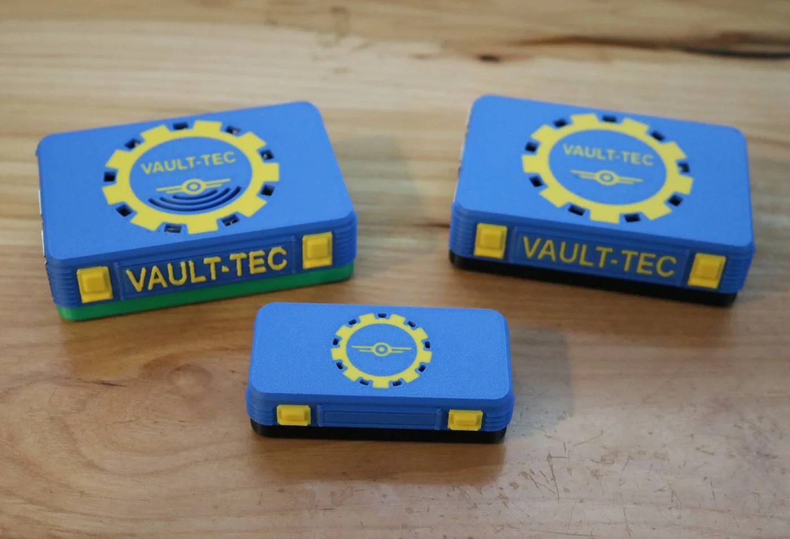
Two parts and four screws
Each case is two printed parts. The base is a plate with a low rim and four standoffs for the board. The top is everything above the board: the walls, the lid and the badge. Four M2.5 screws go up through the base, through the Pi's own mounting holes, and into posts inside the top. They hold the board down and close the case at the same time.
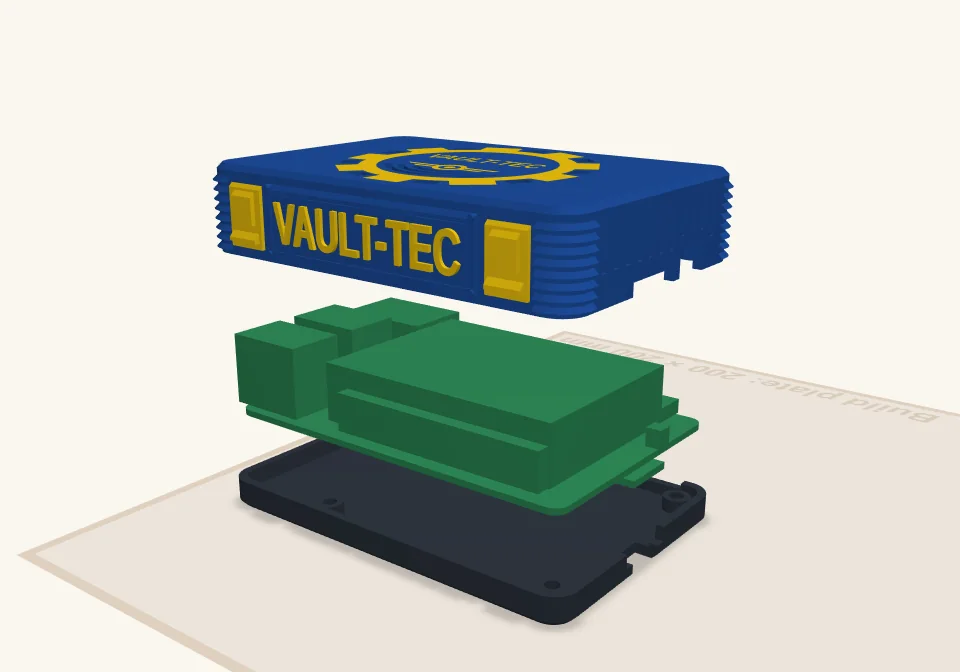
The green board in the picture is the same trick I used for my Raspberry Pi mounts: an outline of the Pi, with all its ports, sitting where the real one will go. It's only there as a guide, so I can see that every port lines up before I print anything. I don't print the green board; I throw it away when I export and go to slice.
The ports are where most cases get fiddly. Here, each port is a notch in the bottom edge of the wall, with a matching dip in the base's rim. The top doesn't have to be threaded over the USB and Ethernet jacks; it just drops straight down over them.
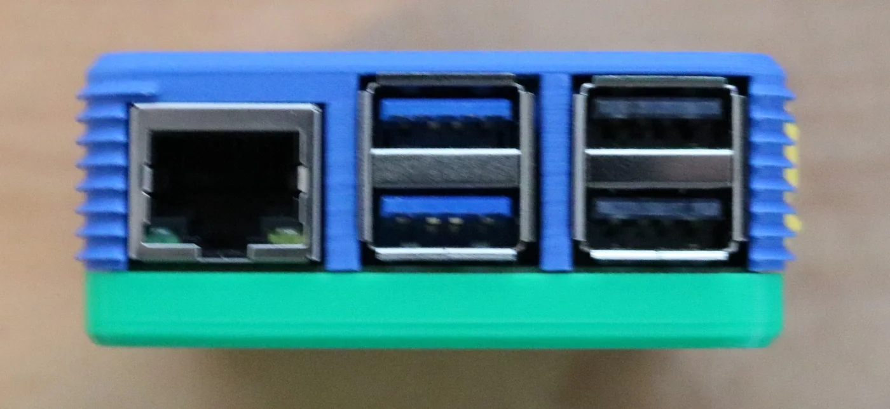
Printing the top upside down
The top prints upside down, with the lid flat on the bed. That has two big advantages. The lid comes out perfectly flat, with the texture of the build plate, and the badge is in the very first layers, where a two-colour print is at its sharpest. If you've done any 3D printing, you're probably familiar with the slicer tool that lays a face of a model flat on the build plate. ScottiCAD has that same tool built in, so I can design the case right side up, then flip it over before I export it.
The catch is everything that sticks out from the walls: the nameplate, its lettering, the latches and the ribs on the corners. Upside down, the top of each one is an overhang. So each of them has its top edge sloped at 45°, which prints without support. You can see it on the ribs: each one is a little ramp, not a square step.
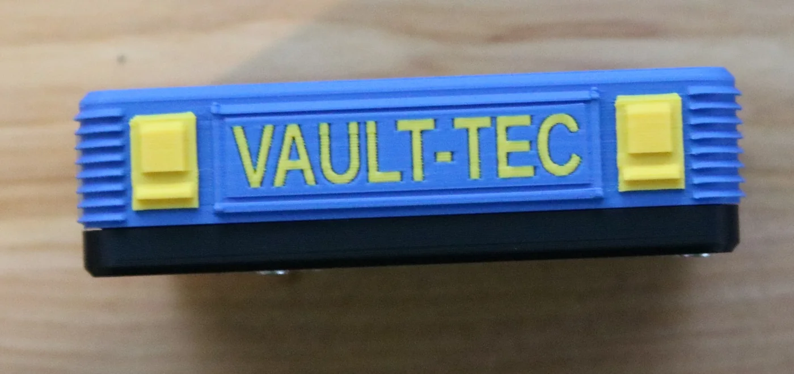
The lettering on the nameplate is still the hardest part to print well, because the details are so thin. There are two versions of each top: raised lettering, as in the photo, and flush lettering, sunk level with the plate, which has no overhang at all. The raised version looks better if it comes out clean, and it needs a little help: either supports under the letters, or a few minutes with a craft knife afterwards. I tried them both, and I think I like the flush lettering better because it's cleaner.
One solid per colour
The badge, the lettering, the logo and the latches are all one part: a single yellow solid.
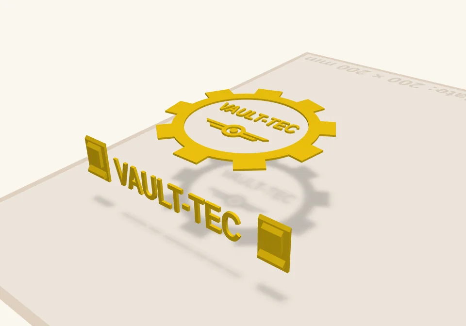
The rule I follow for any multicolour design is one solid per colour. The yellow part touches the blue but never overlaps it. Where the badge is inlaid into the lid, the blue has a pocket exactly the shape of the badge, and the yellow fills it.
This is also how ScottiCAD's 3MF export knows what's what. Each colour becomes its own part, so the slicer gets a blue part and a yellow part and you just assign filaments. Getting this right took a fix in ScottiCAD itself. In an earlier version, an inlay that filled its pocket exactly was joined to the blue around it, and only its triangles were coloured. Bambu Studio ignores triangle colours, so my first lid came out with a blue badge in a blue lid. In 0.3.0, an inlay is a part of its own colour.
To keep the design easy to work with, the shell and the yellow are bundled together as the Top, and the base, the top and the board outline are bundled as the whole case. One ungroup splits the top from the base; a second splits the colours. If you've ever ungrouped a multicolour part and watched every colour fall apart at once, you'll see why.
How small can lettering go?
The Pi Zero 2 W is tiny, and so is its case. My first version had "VAULT-TEC" on the lid and on the nameplate, like the others, but the letters came out 2.6 and 3 mm tall, with strokes about 0.4 mm wide. That's a single line from a 0.4 mm nozzle. It did print, but it was very fragile and sloppy-looking. With a 0.2 mm nozzle I might have had better luck.
My rule of thumb now is that lettering under about 4.5 mm tall doesn't print well with a 0.4 mm nozzle. The script leaves the lettering off anything smaller. The Zero's lid gets a bigger logo instead, as big as its wings will fit, and its nameplate is plain. Although I was sad to drop the text, I think the little case looks fine with just the logo.
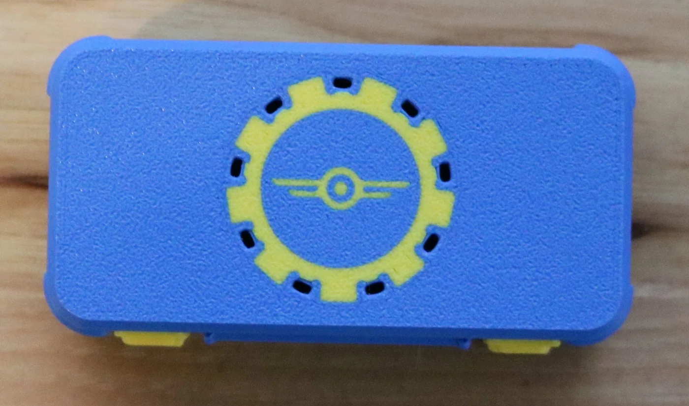
Keeping the Pi 5 cool
The Pi 5 with its Active Cooler runs warm, and a closed lid right over the fan isn't a good idea. The cooler draws air in from above and blows it out sideways through its fins. So the Pi 5's case has three things the others don't:
- three curved slots through the badge, right over the fan, which also look like signal waves coming off the logo;
- a full row of gills along the wall above the USB-C and HDMI sockets, where the fins blow;
- gills up the end wall, over the power button and microSD card.
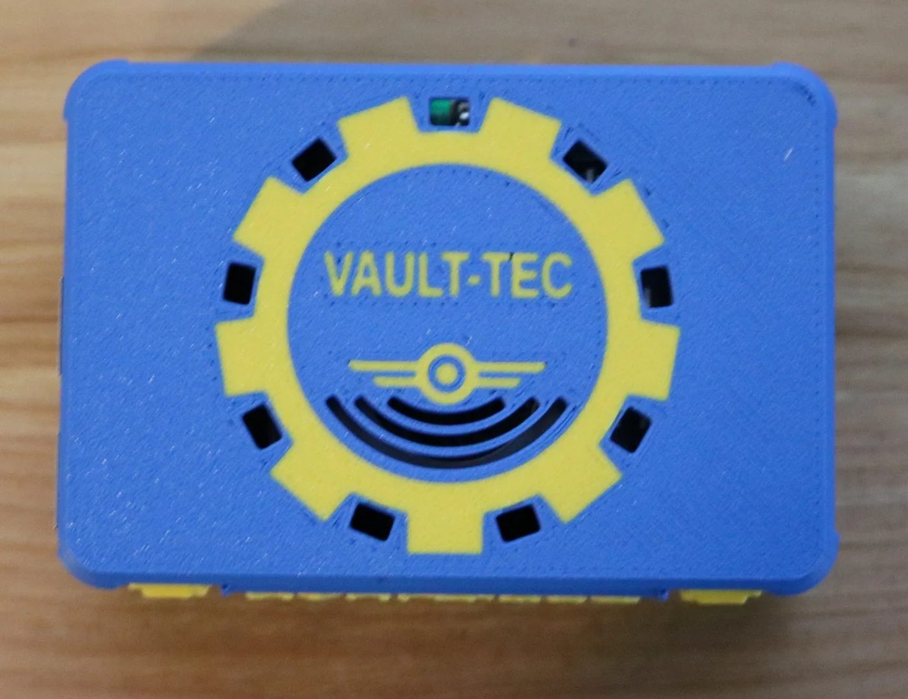
The gaps between the cog's teeth are vents on every case. I haven't measured temperatures yet, so treat the cooling as a sensible start rather than a tested result.
I think there's enough room for cooling. Keep in mind that the air doesn't have to come in through the cutouts right above the fan; the fan can pull it in through the other gills as well.
Printing and putting it together
Here's the Pi 5 case laid out the way it prints: the top upside down, with its screw posts pointing up, and the base beside it.
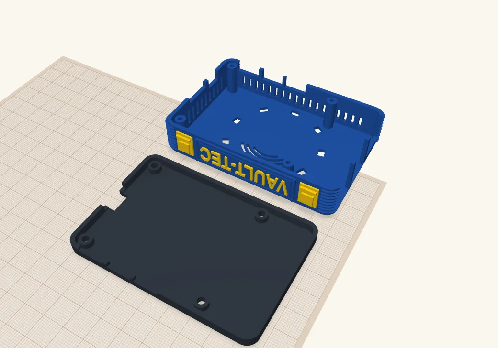
- Layers: 0.2 mm.
- Supports: the flush-lettering tops don't need any. The raised lettering is better with supports under it, or some cleanup. The screw pockets under the base can use a little support too.
- Screws: four M2.5 × 8 mm, socket cap or button head. They cut their own thread in the posts, so they go in tight. Drive them slowly and don't overtighten. If they're too tight for you, widen the holes in the script from 2.2 to 2.4 mm. There's more about this in Screws in 3D prints.
- Feet: the underside has hollows for stick-on feet up to 8.5 mm wide. They overlap the screw pockets a little, so the feet may need trimming. If you use button-head screws, you won't need to trim them.
To assemble, set the Pi on the base's standoffs, lower the top over it, turn the whole thing over and drive in the screws.
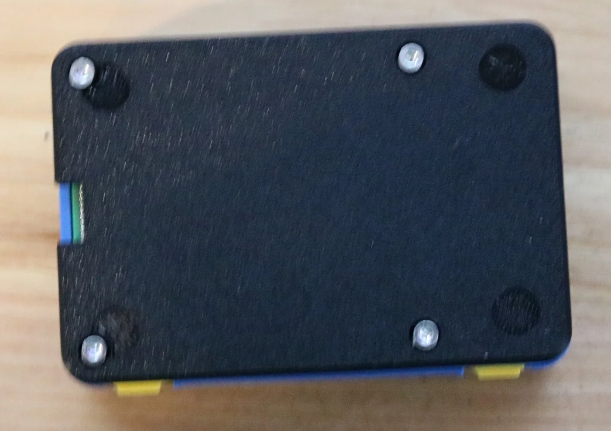
Make your own
All three cases come from one script, vault-case.star, in ScottiCAD's examples. The settings at the top let you change:
- the board: Pi 5, Pi 4 or Zero 2 W;
- the lettering: "VAULT-TEC", your own word, or none at all;
- raised or flush lettering on the nameplate;
- one colour or two: in one colour, the badge is engraved instead of inlaid;
- the vents: the end-wall gills, and the Pi 5's fan slots and front gills, each on or off;
- the feet: the size of the hollows, or none.
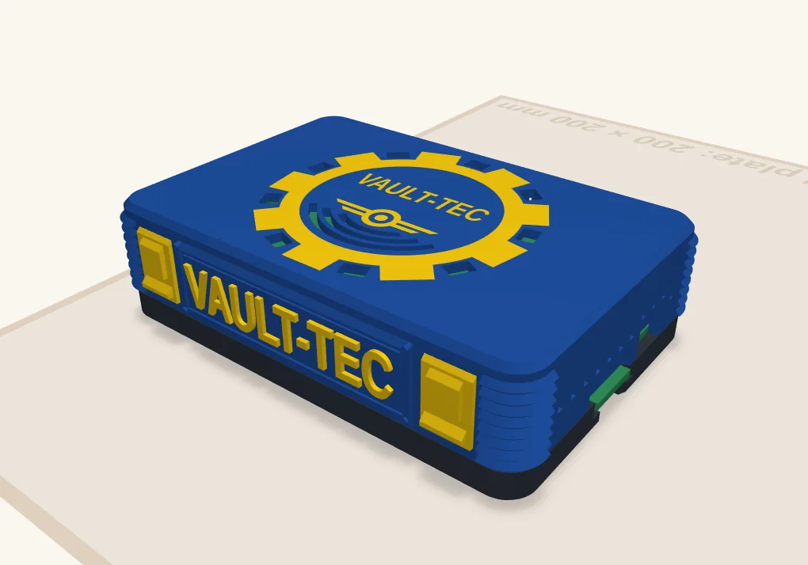
Or open the ready-made designs: Pi 5, Pi 4 and Zero 2 W. They're also on MakerWorld, ready to print, with a print profile for each board.
Before you export, open the filament panel and look at the print check. It tells you if anything is floating, inside out or full of holes, which is worth knowing before you start a long two-colour print.
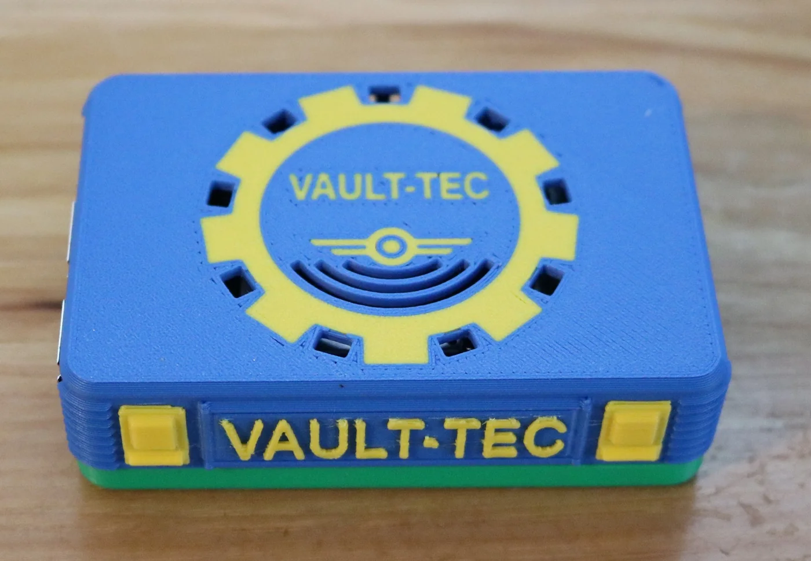
More from Scotti's Corner
- Using an AI agent to drive ScottiCAD 7 November 2026
- Getting 3D-printed parts to fit together 1 November 2026
- Screws in 3D prints: inserts and nut traps 31 October 2026
- Your first ScottiCAD script 30 October 2026
- Putting text on your 3D prints 30 October 2026